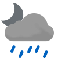

Weather
Germersheim 10.9-22.3
10.9-22.3

10.9-18.4 Tue

11.7-19.5 Wed

7.5-15.7 Thu

7.2-18.8 Fri

11.3-18.0 Sat

12.4-16.5 Sun

12.6-15.9 Mon

9.6-15.6 Tue

14.3-15.0 Wed
Erlabrunn 13.0-18.4
13.0-18.4

11.6-14.3 Tue

11.4-14.6 Wed

6.1-11.6 Thu

7.6-15.1 Fri

11.7-18.4 Sat

11.0-16.3 Sun

11.2-18.6 Mon

7.8-12.2 Tue

9.5-11.6 Wed
Schmilka 13.8-21.9
13.8-21.9

13.8-18.1 Tue

13.9-17.7 Wed

8.8-15.3 Thu

7.8-17.0 Fri

11.8-19.2 Sat

11.1-17.2 Sun

12.9-20.6 Mon

10.9-16.5 Tue

11.2-12.1 Wed